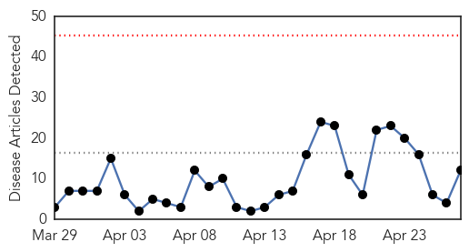
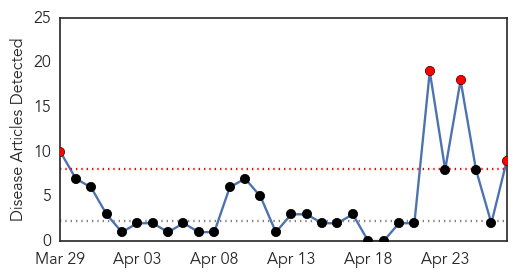
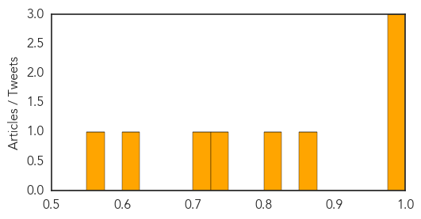

Measles
30-Day Web Trend
0 alerts, 0 warnings

30-Day Twitter Trend
0 alerts, 0 warnings

Article Locations

Article Confidences

Top Articles:
- 0.928
- Never mind the science: Anti-vaccine tide difficult to stem
- 0.912
- When the Vaccine Cops Knock on Your Door
- 0.866
- Microneedle Patch for Measles Vaccination Could Be a Game Changer
- 0.861
- Health Threats Loom Over Survivors
- 0.824
- Bravo to doctors who inform about vaccines
- 0.824
- National Immunization Awareness Week launched by the Honourable Rona Ambrose, Minister of Health
- 0.816
- WHO call for harder push to meet global vaccination targets
- 0.707
- How many go to your child's school?
- 0.666
- HELP ON THE WAY? Malaria vaccine found to cut cases in half
- 0.570
- Afghanistan: Vaccination Week kicks off in Afghanistan: Closing the immunization gap saves lives
- 0.533
- 79 Million Americans Carry the HPV Virus
- 0.523
- WHO urges Kenya to improve vaccination rates
Top Tweets:
-
No tweets found for Apr 27, 2015
Meningitis
30-Day Web Trend
4 alerts, 0 warnings

30-Day Twitter Trend
1 alerts, 0 warnings

Article Locations

Article Confidences
Top Articles:
- 0.992
- Meningococcal disease in Niger (24 April 2015) - Niger
- 0.982
- Niger faces meningitis after Ebola Outbreak
- 0.982
- Spared Ebola, Niger faces meningitis
- 0.857
- ‘Closing the immunization gap’
- 0.818
- Listeria Sabra hummus a staple in many refrigerators including my own
- 0.741
- Final trial results of the world's most advanced malaria vaccine
- 0.708
- WHO launches African Vaccination Week in Zambia
- 0.612
- HPV Vaccine Produces Early Benefits for Teen Girls
- 0.560
- MRF Focuses on Action Meningitis on World Meningitis Day
Top Tweets:
-
No tweets found for Apr 27, 2015